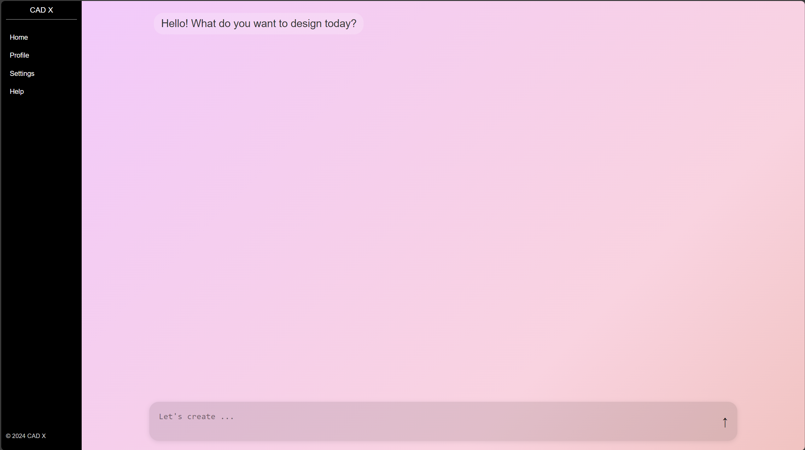
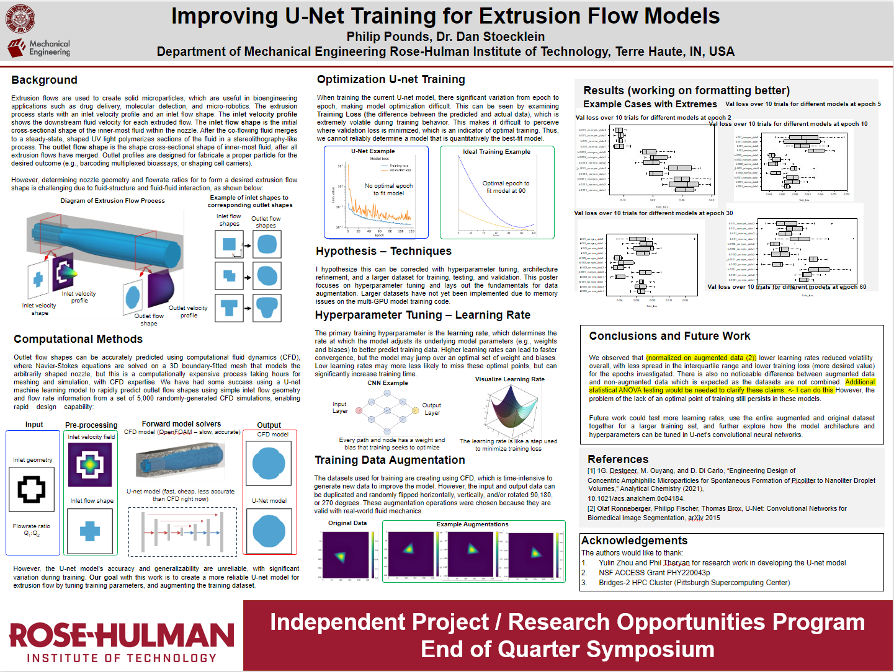

Portfolio - Philip Pounds
CNV Interactive Viewer for rAI
The CNV Web Application is a powerful tool designed for analyzing Copy Number Variation (CNV) data across multiple genomic samples. It allows users to upload Json files from rAI, process the data, and visualize the results through interactive scatter plots or heatamps for simple multi sample analysis. Built with React and Next.js, this application provides a user-friendly interface for exploring complex genomic data, making it easier for researchers and bioinformaticians to identify and interpret CNV patterns. (There is no picture of the application in use, as this would violate paitent data laws)
Generative AI Engineering Design AI Model
At the end of Spring 2024, I and my friend Kevin Cotessollo, created CAD X AI to research and produce models for engineering design and analysis. The current model we are building is the toybox model - a generative AI model that can create new 3D printable files from text or image input.
Gridded Ion Thruster - Rose-Hulman Electric Propulsion Research Team

I was on the team that designed the first undergraduate gridded ion thruster from start to end. I helped with the mechanical and electrical design of the thruster and the integration of the subsystems. I also made the bill of materials and wrote documentation to get the team a large grant
Machine Learning for Prediction of Extrusion Flow Shapes
For the first 2 years of school, I assisted Dr. Stoecklien in developing U-net models in TensorFlow to predict extrusion shapes I wrote model artechtures, hyper parameter tuning, and wrote job scripts for high-performance computing. The eventual application of the extrusion shape research will be used in micro manufacturing of medicines.
Computationally Classifying Coiled-Coil Sequences

At my REU, I worked under the guidance of Dr. Alex Pak to develop machine learning models - specifically transformers and recurrent neural networks - to accurately identify peptide sequences that will likely form hydrogels that would have the properties to work for medical delivery. I made models and investigated different architectures, hyperparameters, and data parametrization.